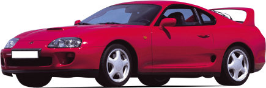

Toyota Supra IV (A80)
Although Toyota stopped Mk4 production in 2002, this fourth-generation Supra is still a superstar.
Whether you’re a car-loving millennial, a Gen Xer, or an old-school sports car fan, you’ve heard about the legendary Toyota Supra. In the automotive world, the Supra shot to superstardom with its breakout role in “The Fast and the Furious” blockbuster movies. With its unmistakable aerodynamic shape, the fourth generation (built between 1993 and 2002) offered two different engine options; a naturally aspirated 2JZ-GE 3.0-litre and a 2JZ-GTE 3.0-litre. Each model offered both automatic and manual options.
- Engine :3.0 liter (inline 6)
- Horsepower :326 hp
- Drivetrain :RWD
- Top Speed :250 Km/h - 155 Mph
- 0 to 100 km/h (0 to 62 mph) :5.1 s
- Download catalog